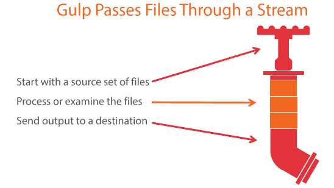

Wat is Gulp?
- Een verbetering van jou workflow
- Hulpmiddel voor het autimatiseren van jouw project
- Task runner
- Een alternatief op andere compilers of scripten
Hoe kan je Gulp gebruiken?
- Plugins van gulp zelf of van npm
- Op te roepen via de command line
- Gebruik maken van piping
- Compilen van bestanden
- Optimaliseren van bestanden

Functies in Gulp
- Eigen functies in je gulpfile schrijven
- Custom function packages van npm importeren
- Meerdere taken tegelijk uitvoeren
- Taken in serie uitvoeren
- Bestanden Watchen